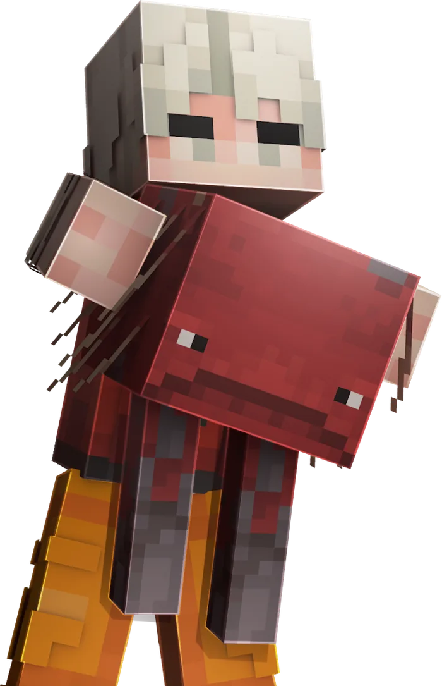

Начало приключения
Как начать играть
Несколько простых шагов для знакомства с BloodMine
01
Познакомься с проектом
Посмотри главную страницу, изучи категории и реши, какие занятия тебе интересны: исследование, строительство или командная игра.
02
Прочитай правила
Разберись, как устроено общение и взаимодействие с другими игроками. Это поможет избежать недоразумений.
Открыть правила03
Выбери свою цель
Придумай первую постройку, найди единомышленников или наметь маршрут исследования. Начни с небольшой понятной задачи.

О подключении
Это демонстрационная версия сайта. Здесь нет адреса игрового сервера, подключения и регистрации. Все разделы можно изучать как макет.
Вернуться на главнуюЧастые вопросы
Нет. Каталог показывает пример выбора товара. Платежи и выдача игровых предметов не подключены.
Открой раздел «Правила» в верхнем меню. Каждый пункт можно раскрыть отдельно.